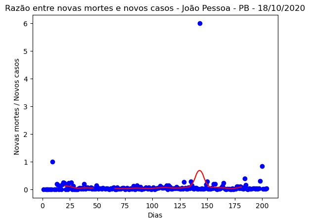

João Pessoa - PB - 18/10/2020.
Detalhes técnicos, aqui. Clique aqui para uma versão em PDF desta análise.
População: 809.015.
Início e fim da série: 2020-03-27 e 2020-10-17. (205 elementos - 29 semanas e 2 dias).
Número de casos totais e mortes: 31.421 e 951. (38.839 e 1.176 por milhão de habitantes, respectivamente.)
r0 (integral) efetivo médio (duas últimas semanas - três dias de atraso): 3,04 (std = 0,51).
Último intervalo para r0 (três dias de atraso): (3,30 : 3,82).
Limiar imunidade de grupo nR (baseado no valor de r0 (integral) efetivo médio) = 0,67.
Previsão do número total de casos para os próximos 5 dias: 31.536, 31.651, 31.767, 31.882, 31.998.
